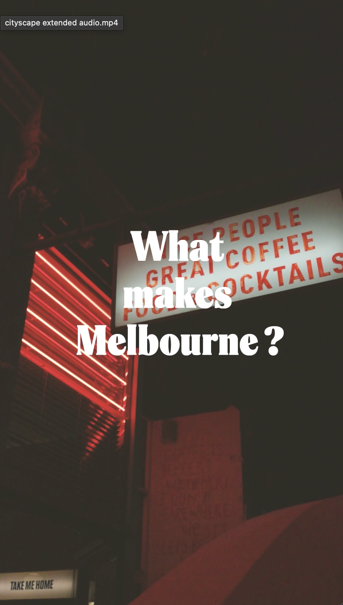

10th Day
I got to start my own project today! I worked on creating a 30 second urban landscape video for the leftover BTS footage we have from shoots.I got to use some of the BTS clips I took at the lincoln. Fixed up the graphic overlays for campari so they more visable with a black stroke around the text.
11th Day
Kept on wortking on my cityscape video. Updated more more subtitles for the Campari Video.
12th Day
I finished off the cityscape Video today and did some raw footage organisation for a new series "Where the F is this"